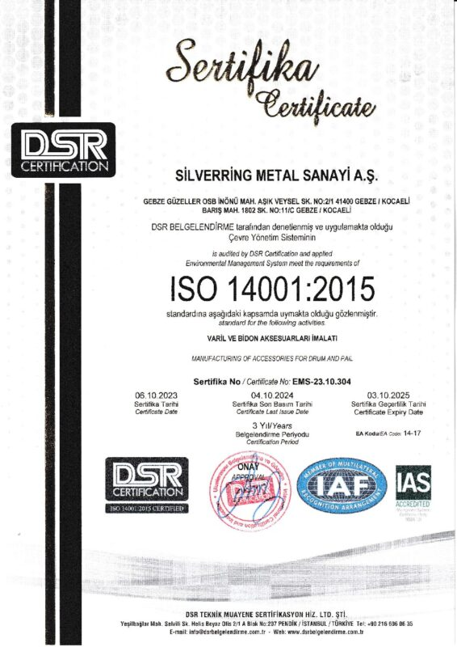
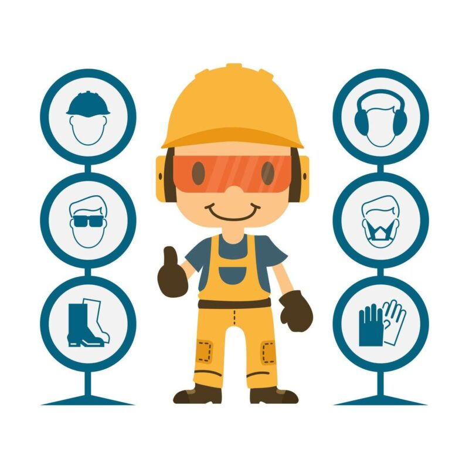

Firmamız, metal, plastik ve fiber varil çemberleri ile aksesuarlarının üretimi konusunda faaliyet göstermektedir. Kimya, gıda, ilaç, petrol v.b. birçok alanda kullanım için özelleştirilmiş ürün yelpazemiz, müşterilerimize yüksek kalitesi ve aynı zamanda rekabetçi fiyatları ile büyük bir avantaj sağlamaktadır.
SilverRing, ambalaj sektöründe uzun yıllara dayanan deneyimi, uzman kadrosu ve güçlü mali yapısıyla, yurt içinde lider konumda hizmet vermektedir.
Küresel bir marka haline gelme yolunda ilerleyen SilverRing, çok uluslu şirketlerin global tedarikçisi olmayı başarmıştır. Şu anda yaklaşık 30 ülkeye ihracat yapan firmamız, ihracat oranını sürekli artırarak, sektörün dünya çapındaki lideri olma yolunda emin adımlar atmaktadır.

"Müşteri Odaklılık" vizyonu ile hareket eden şirketimiz, aşağıdaki ilkeler doğrultusunda en yüksek seviyede kaliteli hizmet vermeyi taahhüt etmektedir:
Misyonu gereği tüm faaliyetlerinde en yüksek seviyede kaliteli hizmet vermeyi,
Şirketimizde ilgili birimlerin kalite hedeflerini somut ve ölçülebilir parametreler üzerinden belirlemeyi,
İş süreçlerini vizyonumuz doğrultusunda yapılandırmayı,
İş süreçlerimizin kalite seviyeleri arasında ortaya çıkabilecek farklılıkları en aza indirmeyi,
İş süreçlerini sürekli gözden geçirerek kalite seviyesinin arttırılabileceği alanları belirlemeyi,
Kalite standartları, müşteri ve diğer şartlara göre çalışmalarımızı yürütmeyi ve kalite yönetim sisteminin etkinliğini sürekli iyileştirmeyi,
İş süreçlerimizdeki verimliliğimizi uluslararası düzeyde rekabet edebilecek bir seviyeye yükseltmeyi,
Şirketimizde yenilikçi ve yaratıcı yaklaşımları cesaretlendirmeyi,
Kalite yönetim sistemimizin gerektirdiği dokümantasyon ve arşiv sistemini oluşturmayı,
Şirketimizin faaliyet göstermiş olduğu sektörde kalitesi ile öne çıkan bir işletme olmayı,
Yaşadığımız dünyanın herhangi bir yerinde çevreye verilen her türde zararın hepimizin sorunu olduğunu kabul ediyoruz. Bu bağlamda şirketimiz taahhüt etmektedir:
Çevre yönetim sistemimizi ve performansını sürekli geliştirerek çevre kirliliğini önlemeyi,
Çevreyle ilgili çıkarılan yasalara ve mevzuata uymayı,
Geri dönüşüme konu olan hammadde/işletme malzemelerini kullanmayı,
Süreçlerimizi etkin ve verimli olarak yöneterek atıklarımızı en aza indirmeyi,
Çalışanlarımızı ve altyüklenici firma personellerini çevre sorunlarına karşı duyarlı hale getirmek ve farkındalıklarını arttırmak için eğitim vermeyi,
Her türlü faaliyetimizden doğabilecek çevresel etkileri, toplumsal sorumluluk bilinciyle yönetmeyi,
Yasal yükümlülüklerin ötesinde en iyi çevresel çözümlerin, uygulamaların, çevre dostu teknolojilerin gelişmesine ve yayılmasına yardımcı olmayı,
Çevre bilincini arttıracak her türlü girişime destek sağlamayı,
Faaliyet gösterdiğimiz alanda çevreye duyarlı örnek bir işletme olmayı,

İnsan bizim için en değerli varlıktır. "Sıfır İş Kazası ve Meslek Hastalığı" hedefiyle şirketimiz taahhüt etmektedir:
İşyeri ve eklentilerinde; çalışanların, altyüklenici personellerin, ziyaretçilerin daha sağlıklı ve güvenilir bir ortamda çalışmalarını temin etmek için, yürürlükte bulunan İSG mevzuatına uygun olarak her türlü tedbiri almayı,
İşyeri ve eklentilerinde iş kazası ve meslek hastalığı doğurabilecek durum ve hareketleri, olası kaza risklerini etkin bir risk değerlendirmesi yaparak önceden tespit etmeyi ve ortadan kaldırmayı,
Her seviyedeki çalışanların, altyüklenici personellerin ve ziyaretçilerin sağlık, güvenlik ve sosyal refahlarını temin etmeyi,
Çalışanlarımızı ve altyüklenici personelleri iş sağlığı ve güvenliği alanında eğitmeyi ve iyi bir İSG bilincine erişmelerini sağlamayı,
İşyerinde hizmet veren altyüklenici personellerin ve ziyaretçilerin de şirketimizin İSG kurallarına uymalarını sağlamayı,
Şirketimizi İSG uygulamaları açısından, faaliyet gösterdiği sektörde örnek bir şirket haline getirmeyi,
Kurulmuş ve yürütülmekte olan İSG Yönetim Sistemimizin sürekliliğini sağlamayı,

"Müşteri Odaklılık" vizyonu ile hareket eden şirketimiz, taleplerini yerine getirirken açık, şeffaf, hızlı ve güven verici hareket eder. Bu ilkeler doğrultusunda şirketimiz taahhüt etmektedir:
Tüm şikâyet, öneri, talep, bilgilendirme ve beğenileri kayıt altına alarak takibini sağlamayı,
Müşteri, personel ve diğer tüm ilgili taraflardan sağlanan her bir bildirimi sürekli gelişimimiz için ödül kabul ederek; objektif, adil, dikkatli, gizlilik esasına dayanarak incelemeyi ve çözüm sunmayı,
Memnuniyetsizliklerin tekrarının önlenmesi için “Düzeltici/Önleyici” faaliyetleri gerçekleştirmeyi,
Tüm çalışmalarımızın çözüm odaklı olmasını sağlamayı,
Yasal, finansal, operasyonel, kurumsal ve diğer uygulanabilir şartlara dayalı hizmet sunmayı,
Müşterilerimizin ürün ve hizmetlerimizden en üst seviyede memnun olmasını sağlamayı,
Şirketimiz insana ve doğal çevreye saygıyı en önde tutan bir anlayışla yönetilmektedir. Bu bağlamda şirketimiz taahhüt etmektedir:
Hissedarlarımız, çalışanlarımız, müşterilerimiz ve diğer paydaşlarımız ile uyumlu çalışmayı,
Çalışanlarımızın özlük haklarını eksiksiz ve doğru biçimde kullandırmayı,
Çalışanlarımıza dürüst, güvenli, sağlıklı ve huzurlu bir çalışma ortamı sağlamayı,
Çalışanlarımızın iş hayatı ile özel hayatları arasındaki dengeyi gözetmeyi,
Çalışanlarımız arasında ırk, din, dil, cinsiyet, siyasi düşünce gibi nedenlerle ayrımcılık yapmamayı,
En değerli varlığımız olan çalışanlarımızın sağlıklarını korumayı,
Kurumsal sosyal sorumluluk ilkesi çerçevesinde toplumumuzun gelişimi için çaba göstermeyi,
Ülkemizin gelenek ve kültürüne duyarlı davranıp, tüm yasal düzenlemelere uygun hareket etmeyi,
SILVERRING METAL SAN. A.Ş., tedarik zincirinde sürdürülebilirlik, etik değerler ve çalışan haklarına saygıyı ön planda tutarak sorumlu ve güvene dayalı ilişkiler kurmayı taahhüt etmektedir. Bu kapsamda tüm tedarikçilerimiz ve iş ortaklarımız:
Çalışanlarına mevzuata ve çalışma şartlarına uygun haklar sağlamakla yükümlüdür,
Çalışanlarına hiçbir türde (din, dil, ırk, renk, cinsiyet, cinsel yönelim, yaş vb.) ayrımcılık yapamaz,
Zorla veya zorunlu çalıştırmanın hiçbir türünü uygulayamaz; istihdam kararları serbest seçim esasına dayalı olmak zorundadır,
Çocuk işçi çalıştıramaz; ILO ve BM sözleşmeleri başta olmak üzere tüm geçerli ulusal ve uluslararası mevzuata uyar,
İş sağlığı ve güvenliği bakımından tüm önlemleri alır; gerekli eğitim, donanım ve ekipmanı temin eder,
Faaliyetlerini çevresel anlamda geçerli olan tüm yerel ve uluslararası düzenlemelere uygun olarak sürdürür,
Rüşvet veremez, alamaz ve yolsuzluk yapamaz; bu kapsamda gerekli önlemleri alır,
Herhangi bir etik ya da kanun dışı konunun gündeme gelmesi durumunda bunları raporlamakla yükümlüdür,